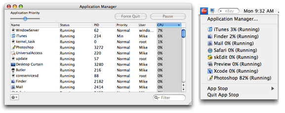

Using CPU Usage Reporting
CPU usage reporting allows you to see what applications are using the majority of your processing power. There are two ways to view the CPU usage for an application, through the menu-bar and through the application table (both shown below).
See also
Setting CPU Usage Reporting Preferences
Application Manager Topics